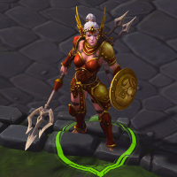
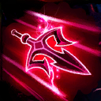
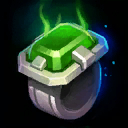
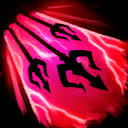
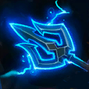
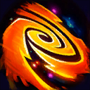
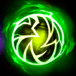
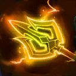

Cassia
Welcome to our Cassia guide for Heroes of the Storm. Here you will learn everything you need to know in order to play Cassia in a competitive environment, whether you play on your own or with a team.
Charged Strikes Build
| Level 1 | Level 4 | Level 7 | Level 10 | Level 13 | Level 16 | Level 20 |
|---|---|---|---|---|---|---|
|  |  |  |  |
 |  |
 |
With the Charged Strikes Build, your main "Ability" will be Charged Strikes Icon Charged Strikes. This Talent can deal more sustained damage than any Basic Ability in Cassia's kit. Charged Strikes is extemely powerful while your team is sieging; you can bounce Basic Attacks attacks from Structures to the Heroes behind them. The main drawback of this build is that it requires you to remain within Cassia's short attack range while delivering Basic Attacks.
Use Charged Strikes liberally. It has a low Cooldown, costs no Mana, and the bonus damage is useful even without enemy Heroes nearby. Use Impale Icon Impale to secure kills on low Health enemies. Use Grounding Bolt Icon Grounding Bolt to reliably proc Martial Law Icon Martial Law. You should consider replacing Grounding Bolt with Seraph's Hymn Icon Seraph's Hymn in games where your team has many Stuns, Roots, or Slows.
Fend Build
| Level 1 | Level 4 | Level 7 | Level 10 | Level 13 | Level 16 | Level 20 |
|---|---|---|---|---|---|---|
|  | |
 |
The Fend Build focuses on Talents that improve the performance of Fend Icon Fend. This build gives Fend amazing area of effect damage potential. The main drawback of investing heavily into Fend is that it is a channeled Ability, and can be interrupted by various crowd-controls. Interrupting Fend early can prevent most of its damage, and leave it on a full Cooldown. For this reason, this build is recommended against enemy team compositions that will struggle to interrupt Fend's channel time.
Cast Blinding Light Icon Blinding Light over your intended targets just before you charge at them with Fend Icon Fend; this will ensure that you deal as much damage as possible. This is also the most effective way to finish True Sight Icon True Sight's quest. You will be unable to cast other Abilities while channeling Fend, so Fend will always be the final cast in your combo. The most lethal Ability chain for this build is to open with Blinding Light, follow with Ball Lightning, and finish with Fend.
Lightning Fury Build
| Level 1 | Level 4 | Level 7 | Level 10 | Level 13 | Level 16 | Level 20 |
|---|---|---|---|---|---|---|
|
 |
This Build turns Lightning Fury into an outstanding, spammable poke tool. The playstyle of this build differs greatly from the other two, as you will usually deal damage from a safer range. The primary drawback of this build is that it can spend mana very quickly.
Use Lightning Fury on enemy Heroes whenever possible, in order to stack Thunderstroke Icon Thunderstroke quickly. If you cast Lightning Fury perpendicularly toward enemy Gates (before Level 16), the lightning bolts will also damage the Towers and Walls with each cast. Use Impale to finish off low Health enemy Heroes. After you get Pierce Icon Pierce at level 16, you should try to hit as many Heroes as possible with the primary missile of each Lightning Fury.
Go Back